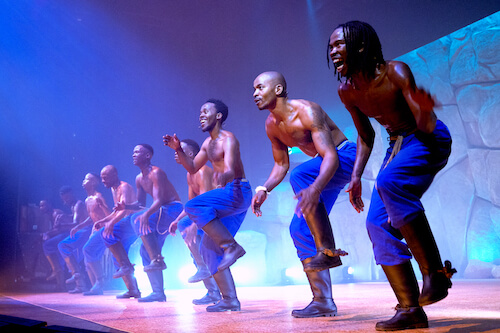
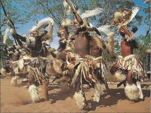
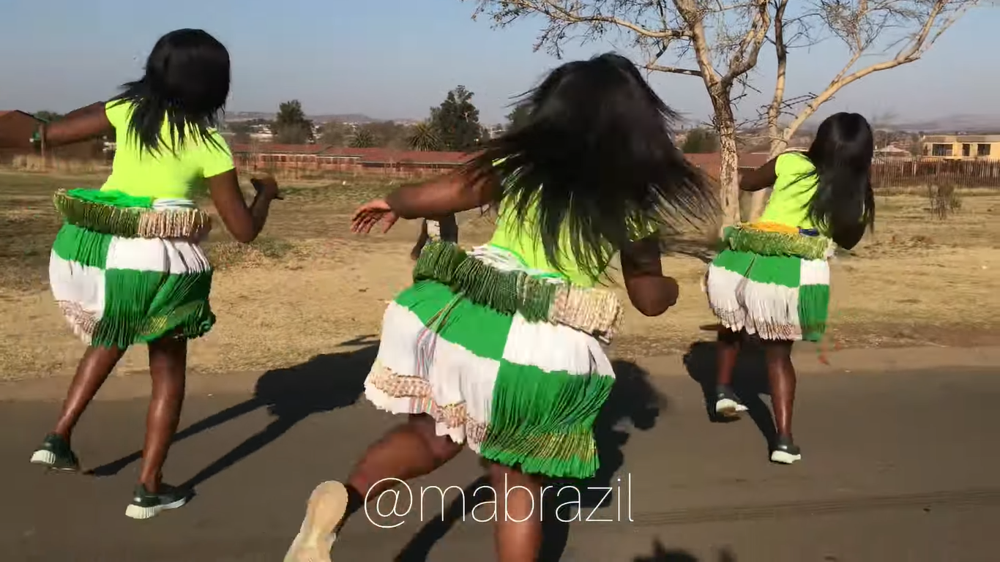
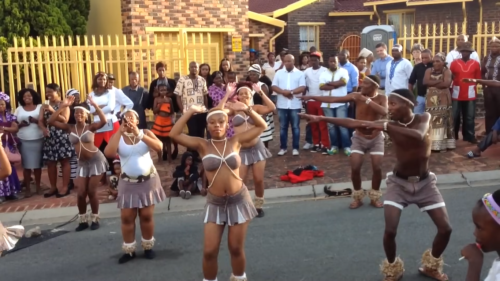
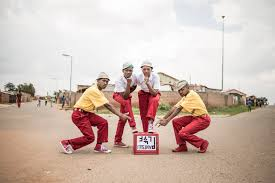

Gumboot – Dansa de percussió corporal nascuda a les mines d’or, on els treballadors es comunicaven colpejant les seves botes de goma; avui simbolitza resistència i ha passat de l’àmbit miner a les escoles i escenaris teatrals.

Dansa Gumboot a Sud-àfrica
Indlamu – Dansa tradicional zulú, amb moviments vibrants d’estampació del peu i salts, originària de ritus guerrers i festivals; està associada a vestimentes amb pells, plomes, escuts i llances.

Dansa Indlamu tradicional
Xibelani – La Xibelani és una dansa on les dones utilitzen faldilles “tinguvu” que accentuen el moviment de malucs; acompanya celebracions de comunitat i rituals de pas de jovent.

Dansa Xibelani amb faldilles tinguve
Tsuana – Dansa de la tribu Tswana (Botswana i Sud-àfrica) que combina moviments de peus i malucs, representant històricament celebracions de vida, casaments i funerals.

Dansa Tswana tradicional
Pantsula – Dansa urbana de barris de Johannesburg, nascuda sota l’apartheid; barreja claqué, jive i Gumboot i s’ha convertit en símbol de protesta, comunitat i expressió urbana.

Dansa Pantsula als carrers de Johannesburg
Moltes d’aquestes danses han deixat d’estar restringides a comunitats rurals i rituals locals per convertir-se en icones internacionals. El Gumboot, per exemple, ha arribat a escoles i festivals, on artistes i estudiants l’utilitzen com a recurs pedagògic i turístic. El Pantsula i el Gwara Gwara han transcendit fronteres a través de vídeos en xarxes socials i videoclips musicals, influenciant artistes de renom mundial. Avui dia, tant a cerimònies tradicionals com a estudis de dansa urbana, aquestes expressions es mantenen vives i adaptades a nous contextos.
Passos treballats
Dakiwe
Pas popular arran del “Dawike Challenge”, impulsat per la DJ sud-africana DBN Gogo. Prové del zulú i significa “estar borratxo” o “marejat”, reproduint visualment la inestabilitat d’una persona que va d’un costat a l’altre, combinant inclinació del tronc, cames flexionades i braços estesos en un moviment semicircular.
Clica a "Veure a Youtube" si el vídeo no surt disponible
Vosho
Pas associat al gènere Gqom, caracteritzat per ajupir-se mentre s’aixeca una cama i es trepitja el terra amb força; els braços acompanyen amb moviments acrobàtics, i el ballador manté un ritme energètic i explosiu. Ha aparegut en videoclips d’artistes com Sho Madjozi i a COLORSxSTUDIOS.
Gwara Gwara
Moviment creat el 2016 pels DJs sud-africans Bongz i Bongekile Simelane; consisteix a balancejar un braç formant un cercle mentre una cama es desplaça seguint el ritme. Connecta moviments fluïts de part superior i inferior, recordant l’estil “Stanky Legg”. Ha estat portat per Rihanna i Childish Gambino en grans esdeveniments musicals.